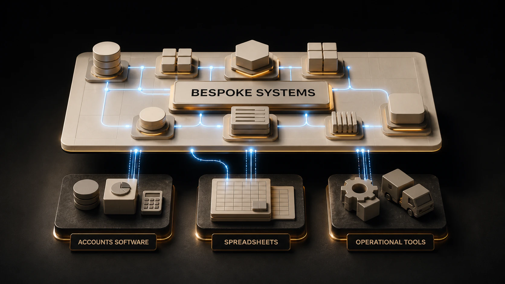

Disconnected work
People, spreadsheets and offline documents hold different parts of the process.
Proof Systems
Helping owner-led businesses replace fragile spreadsheets, disconnected tools and repetitive work with practical software integrated with existing technology, controlled AI automation and training their teams can use.
Keep the useful tools. Add a bespoke layer that connects accounts or ERP software, spreadsheets and operational workflows.
Proof Systems builds around what already works.

01 / THE GAP
The software is there. The flow between it is not.
01B / FIT
Use established software where it fits. Add a focused bespoke layer where it does not.
Bespoke fixes the manual work that off-the-shelf software leaves behind.
02 / CAPABILITY
People, spreadsheets and offline documents hold different parts of the process.
A fitted operational system connects the work, people and controls.
The working process creates a connected, usable flow of structured data.
AI Automation comes after the workflow works. Repetitive tasks can then be automated safely.
Role-specific training helps people apply AI safely and usefully to the work they already do.
03 / PROOF
Frontline capture
Mobile-first weekly site record bespoke to business function.
Admin Ready Invoices & Exports
Project control
Weekly labour allocation
Budget Control
Accounts Software Exports
Finance and reporting
Data extracts directly from accounts systems ready for integration to bespoke systems
04 / APPROACH
Clear workflowFocused build
Needs clarityWorkflow diagnostic
Team capabilityAI training
Ask about team training05 / OPERATOR FIRST
I’m Mat Glendenning. My experience combines operational leadership, systems design and hands-on delivery. Across sixteen years inside an operating construction business, including time as its managing director, I built and improved the systems used by finance, commercial and operational teams.
Proof Systems applies that operator’s view to owner-led SMEs. I begin with the work, the people responsible for it and the evidence they need. Software and AI are useful when they make that operation more reliable, visible or easier to run.
06 / START
Tell me about one recurring workflow. Keep the first description general and do not send confidential documents or sensitive personal information. I will review it personally and suggest a sensible next conversation.